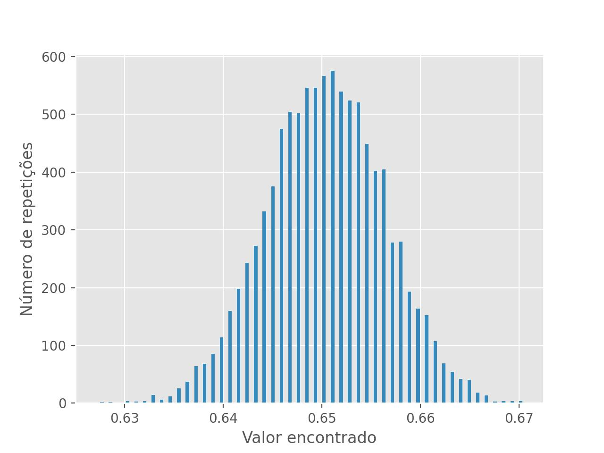

Montecarlo
O que é o Monte Carlo?
O método de Monte Carlo consiste em simular eventos aleatórios computacionalmente, ele é especialmente útil para casos que uma resposta analítica nem sempre é conhecida. Nessa biblioteca ele é usado para 'repetir' várias vezes o mesmo experimento do laboratório e encontrar a gama de diferentes respostas esperadas, com essa distribuição é possível calcular uma média e um desvio padrão da Medida
def montecarlo(func : callable, *parametros ,
hist : bool=False,
probabilidade : list[float] =False):
Propagação de erros usando Monte Carlo
Calcula a média e desvio padrão da densidade de probabilidade de uma função com variáveis gaussianas, é possível calcular a probabilidade de o resultado estar entre [a,b], como também, receber os valores calculados para que possam serem plotados em um histograma
Globals
num_gaussianos : Quantidade de números aleatórios usados (Default=10.000) pode ser alterado globalmente usando quantidade_numeros_gaussianos(valor)
Parameters:
| Name | Type | Description | Default |
|---|---|---|---|
func |
callable
|
função para a propagação do erro |
required |
parametros |
list[Medida]
|
parâmetros da função definida acima |
()
|
hist |
bool
|
retornar ou não a distribuição de probabilidade |
False
|
probabilidade |
list
|
uma lista [a,b] em que a é o começo do intervalo e b o fim |
False
|
Returns:
| Name | Type | Description |
|---|---|---|
Resultado |
Medida
|
Medida com e |
hist |
array
|
Histograma do resultado, caso hist=True |
probabilidade |
list[float]
|
probabilidade de o resultado estar entre [a,b], caso probabilidade=[a,b] |
Source code in LabIFSC2/medida.py
4 5 6 7 8 9 10 11 12 13 14 15 16 17 18 19 20 21 22 23 24 25 26 27 28 29 30 31 32 33 34 35 36 37 38 39 40 41 42 43 44 45 46 47 48 49 50 51 52 53 54 55 56 57 | |
Exemplos
x=Medida(3,1e-3)
y=Medida(5,2e-3)
func=lambda x,y: np.sin(x*y)
montecarlo(func,x,y) #(-0.65 ± 0.01)
#Que é o mesmo que fazer
sin(x**y) #(-0.65 ± 0.01)
montecarlo(func,x,y,probabilidade=[0.64,0.66]) #0.9032
histograma=montecarlo(func,x,y,hist=True)
plt.hist(histograma,bins=50)
plt.xlabel('Valor encontrado')
plt.ylabel('Número de repetições')
plt.savefig('exemplo_histograma.jpg')
